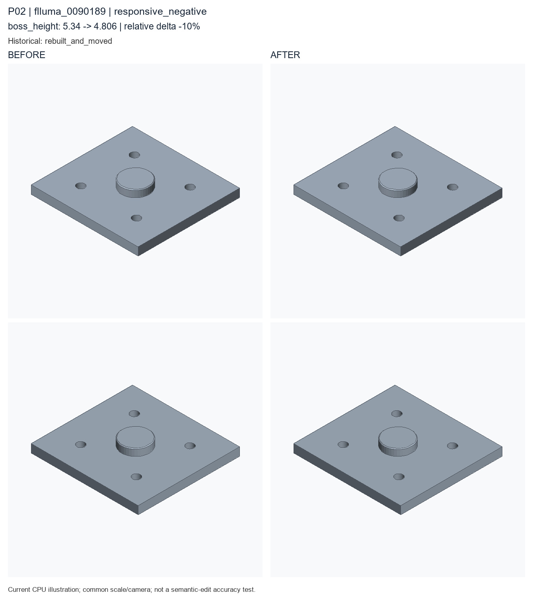

responsive_negative; boss_height: 5.34 → 4.806. Author semantic confirmation PENDING.

Historical record: rebuilt_and_moved. These are current CPU re-exports, not recovered historical STEP bytes.
Original case metadata and literal examples · Exact code difference · Camera and geometry diagnostics
params = Parameters()
params.add('boss_height', 5.34, min=3.0, max=22.0, expression='thickness * 0.87', semantic_type='boss_height')
params.add('boss_radius', 10.14, min=6.0, max=18.0, expression='hole_radius * 4.0', semantic_type='boss_radius')
params.add('chamfer_distance', 0.5, min=0.1, max=1.5, semantic_type='chamfer_distance')
params.add('height', 78.6, min=12, max=80, semantic_type='overall_height')
params.add('hole_offset_x', 20.42, min=4.0, max=45.0, expression='width * 0.28', semantic_type='hole_spacing')
params.add('hole_offset_y', 19.65, min=3.0, max=35.0, expression='height * 0.28', semantic_type='hole_spacing')
params.add('hole_radius', 2.82, min=1, max=8, semantic_type='hole_radius')
params.add('thickness', 6, min=3, max=25, semantic_type='thickness')
params.add('width', 74.5, min=20, max=120, semantic_type='overall_width')
part = Part('flluma_0005700', category='flange_plate', parameters=params, seed=20266214, sample_id='flluma_0005700', units='mm')
plate = part.plate(name='base_flange', width=params['width'], height=params['height'], thickness=params['thickness'], semantic_type='base_plate')
cylinder = part.cylinder(name='raised_center_boss_seed', radius=params['boss_radius'], height=params['boss_height'], semantic_type='boss')
moved = part.translate(name='place_center_boss', target=cylinder, offset=[0.0, 0.0, 5.47], semantic_type='placement')
join = part.boolean_join(name='join_center_boss', target=plate, tool=moved, semantic_type='joined_boss')
holes = part.hole_pattern(name='flange_mounting_holes', target=join.top_face(), radius=params['hole_radius'], depth='through', positions=[[-20.42, -19.65], [20.42, -19.65], [-20.42, 19.65], [20.42, 19.65]], semantic_type='mounting_hole')
chamfer = part.chamfer(name='flange_outer_chamfer', target=holes.top_outer_edges(), distance=params['chamfer_distance'], semantic_type='edge_chamfer')
__all__ = ['part']params = Parameters()
params.add('boss_height', 4.806, min=3.0, max=22.0, expression='thickness * 0.87', semantic_type='boss_height')
params.add('boss_radius', 10.14, min=6.0, max=18.0, expression='hole_radius * 4.0', semantic_type='boss_radius')
params.add('chamfer_distance', 0.5, min=0.1, max=1.5, semantic_type='chamfer_distance')
params.add('height', 78.6, min=12, max=80, semantic_type='overall_height')
params.add('hole_offset_x', 20.42, min=4.0, max=45.0, expression='width * 0.28', semantic_type='hole_spacing')
params.add('hole_offset_y', 19.65, min=3.0, max=35.0, expression='height * 0.28', semantic_type='hole_spacing')
params.add('hole_radius', 2.82, min=1, max=8, semantic_type='hole_radius')
params.add('thickness', 6, min=3, max=25, semantic_type='thickness')
params.add('width', 74.5, min=20, max=120, semantic_type='overall_width')
part = Part('flluma_0005700', category='flange_plate', parameters=params, seed=20266214, sample_id='flluma_0005700', units='mm')
plate = part.plate(name='base_flange', width=params['width'], height=params['height'], thickness=params['thickness'], semantic_type='base_plate')
cylinder = part.cylinder(name='raised_center_boss_seed', radius=params['boss_radius'], height=params['boss_height'], semantic_type='boss')
moved = part.translate(name='place_center_boss', target=cylinder, offset=[0.0, 0.0, 5.47], semantic_type='placement')
join = part.boolean_join(name='join_center_boss', target=plate, tool=moved, semantic_type='joined_boss')
holes = part.hole_pattern(name='flange_mounting_holes', target=join.top_face(), radius=params['hole_radius'], depth='through', positions=[[-20.42, -19.65], [20.42, -19.65], [-20.42, 19.65], [20.42, 19.65]], semantic_type='mounting_hole')
chamfer = part.chamfer(name='flange_outer_chamfer', target=holes.top_outer_edges(), distance=params['chamfer_distance'], semantic_type='edge_chamfer')
__all__ = ['part']